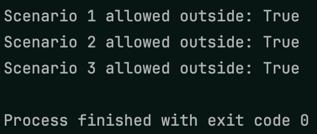

In this project, we’re going to learn about the boolean
(pronounced boo-lee-an) data type. Booleans can be either
True or False. We mainly use booleans for
signaling things in our code.
In this project, we’re going to use booleans to signal different things to figure out if our turtles are allowed to go outside. Complete the following tasks to complete the project! Example output is shown below.
- Create variables called
chores_done,hw_done,raining_outside,has_rain_jacket, andtoo_late, and set them all toFalse - Create a variable called
allowed_outside_1which will store a boolean representing whether our first turtle friend can go outside. Turtle one can go outside if their chores are done, their homework is done, and it’s not raining outside. Print the result and change the variable values to make sure it works. - Create a variable called
allowed_outside_2which will store a boolean representing whether our second turtle friend can go outside. Turtle two can go outside if their chores are done or their homework is done, and it’s not too late to play. Print the result and change the variable values to make sure it works. - Create a variable called
allowed_outside_3which will store a boolean representing whether our third turtle friend can go outside. Turtle three can go outside if it’s either not raining outside, or they have their rain jacket. Print the result and change the variable values to make sure it works.
 Example output